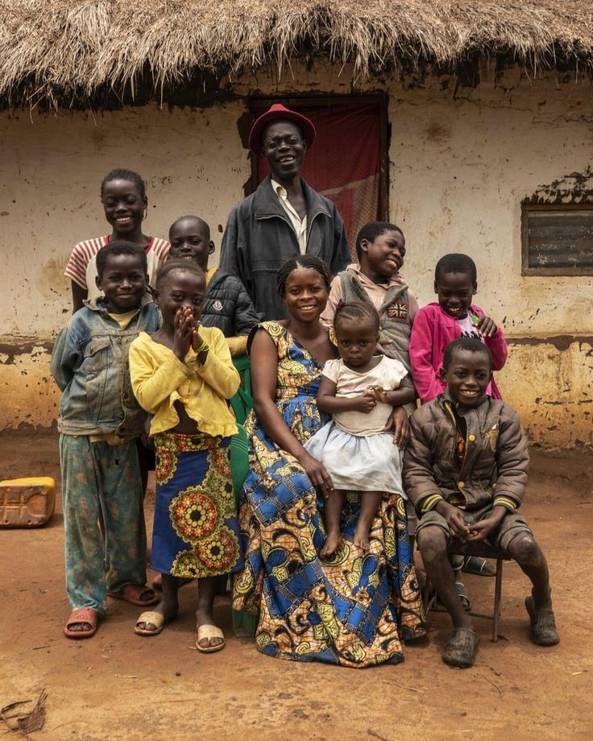

Previous Activities
Past Events
Highlights from our recent outreach programs
 Completed
Completed
Street Feeding - Bwandilo
Successfully distributed meals and essential supplies to homeless individuals in the Bwandilo area.
 Completed
Completed
Clothes & Essentials Drive
Collected and distributed clothing, blankets, and hygiene items to vulnerable community members.
 Completed
Completed
Community Outreach - Kanengo
Engaged with the Kanengo community through feeding programs and family reconnection support.

ImpactFamily Reunion Support
Supported a young man in reconnecting with his family through sustained guidance and assistance.